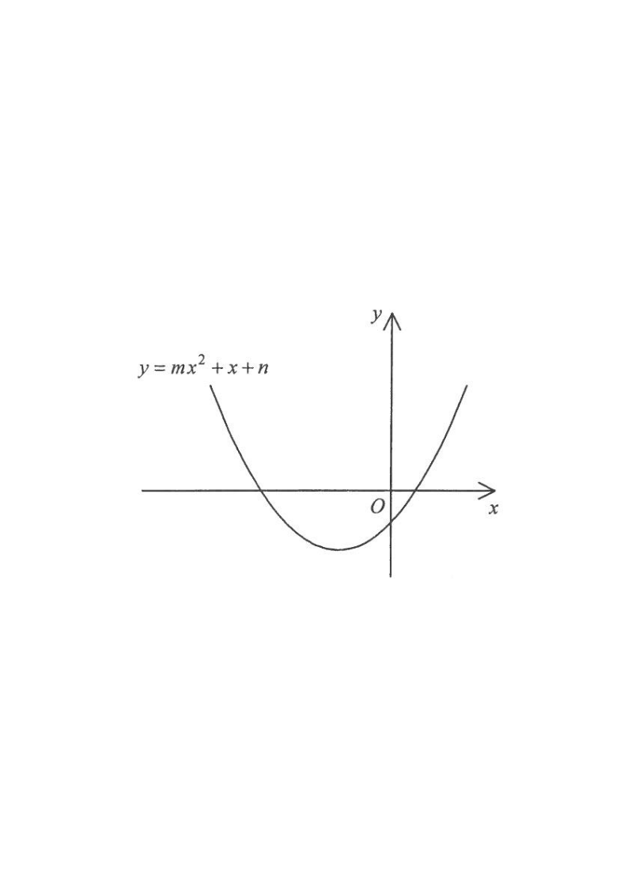

HKDSE 2014 Paper 2 — Q5
Question
The figure shows the graph of \( y = mx^2 + n \), where \(m\) and \(n\) are constants. Which of the following is true?

Understand the equation. The given graph is a parabola of the form \(y = mx^2 + n\). The coefficient \(m\) controls the direction of opening, and \(n\) gives the \(y\)-intercept (since \(y(0)=n\)).
Determine the sign of \(m\). The graph opens upwards, which means the coefficient of \(x^2\) is positive. Therefore,
\[ m > 0. \]
Determine the sign of \(n\). The graph cuts the \(y\)-axis below the origin, so the \(y\)-intercept is negative. Since the \(y\)-intercept is exactly \(n\), we have
\[ n < 0. \]
Combine the results. We have found
\[ m > 0 \quad \text{and} \quad n < 0. \]
Comparing with the options:
- A: \(m<0\), \(n<0\) ❌
- B: \(m<0\), \(n>0\) ❌
- C: \(m>0\), \(n<0\) ✅
- D: \(m>0\), \(n>0\) ❌
Scroll the solution — the diagram on the left updates to highlight each step.